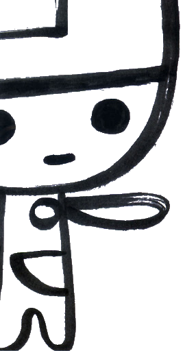

Welcome to the number 1 most UNoffical fan site for 戦国TURB (Sengoku TURB)!
I made this site to compile information about Sengoku TURB, an action RPG developed by qnep for the Dreamcast. On this site you can expect to find a rundown of
what TURB is, some
guides to help my fellow english speaking fans, and
other cool stuff that has to do with TURB.
I'm just a fan. I'm not qnep, nanorayspex, NEC Home Electronics, or Bio_100%, I just happened to snag this domain.
If you have info you would like to share, comments, or questions about the site,
email me! Hope you can learn something new about TURB on this site!
Latest News:
2/22/24 - site up and running! information will be expanded on as we move forward, but we have the basic framework of this site down.
